Exastro IT Automation SimpleMode 利用マニュアル（操作編）¶
2026/03/25 NEC Corporation
1. はじめに¶
1-1. 本書について¶
本書はExastro IT Automation SimpleMode（以下、SimpleMode） の操作方法についてまとめています。
本書を読むことで、以下の作業の手順を理解いただくことができます。
実機からのパラメータ収集作業
収集結果を流用した設定変更作業（構築作業）
収集結果や構築用パラメータの比較作業
収集結果の一括ダウンロード
SimpleModeのセットアップ手順は「Exastro IT Automation SimpleMode 利用マニュアル（インストール編）」をご覧ください。
なお、本利用手順書ではExastro IT Automation本体に関する説明は行っておりません。
これらツールの利用方法については各ツールのサイト等を参照ください。
1-2. 機能概要¶
SimpleModeは、インフラ自動構築ツール『Exastro IT Automation』をより手軽に使えることを目的としたツールです。
SimpleModeの機能を以下に示します。
構築済み環境からのパラメータ収集
収集したパラメータによる構築済み環境のパラメータ参照
収集したパラメータを流用・編集し、構築済パラメータを変更
収集したパラメータによる時系列間での差分比較
Exastro IT Automationの構成管理データベースによるパラメータの履歴管理
収集設定の初期値の管理
パラメータシートの一括ダウンロード
SimpleModeの概要図を以下に示します。
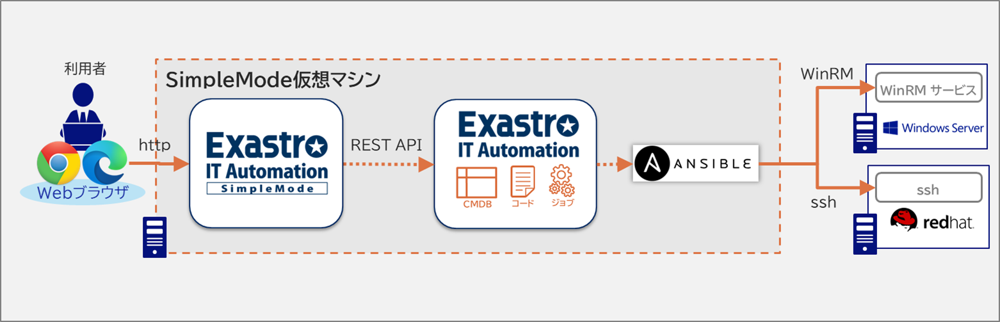
SimpleModeを構成するコンポーネントは3つです。
SimpleMode（Webアプリケーション）
Exastro IT Automation（バックエンド）
Ansible
SimpleModeはジョブやパラメータのデータを保持していません。
Exastro IT Automationをバックエンドとして、設定されているジョブやパラメータをREST APIを実行して呼び出すことで操作を行います。
利用者はSimpleModeのUIを経由して、バックエンドにあるExastro IT Automationによる自動化ジョブ、パラメータ管理を実行することができます。
2. ジョブ実行前の準備¶
ジョブを実行する前に、SimpleModeからターゲットマシンへの接続設定を行います。
2-1. ターゲットマシンの準備¶
2-1-1. Windows Serverの場合（WinRMの設定）¶
SimpleModeが収集、構築を実行するターゲットマシン(Windows)の前提条件は以下のとおりです。
ターゲットマシンはSimpleModeがインストールされたマシンから通信可能なWindowsマシンであること
ターゲットマシンにWinRM接続するアカウントはAdministratorsグループに所属していること
ターゲットマシンはWinRM接続(※)が可能であること
WinRM接続を有効化するには、2つの方法があります。
1. スクリプトによる設定（検証、開発用）¶
ターゲットマシンでPowerShellを起動し、以下のコマンドを実行してConfigureRemotingForAnsible.ps1を任意のフォルダーにダウンロードします。
なお、このスクリプトはトレーニングと開発用・環境構築用スクリプトです。
実稼働環境（本番環境）ではAnsibleのオンラインドキュメントを参照して個別に設定を行うことが推奨されています。（手動設定を参照）
cd [ターゲットマシンの任意のフォルダー]
[System.Net.ServicePointManager]::SecurityProtocol = [System.Net.SecurityProtocolType]::Tls12
Invoke-WebRequest -Uri https://raw.githubusercontent.com/ansible/ansible-documentation/devel/examples/scripts/ConfigureRemotingForAnsible.ps1 -OutFile ConfigureRemotingForAnsible.ps1
Tip
ターゲットマシンがインターネットに接続されていない場合
インターネットに接続されている別のマシンでps1ファイルをダウンロードし、ターゲットマシンの任意のフォルダーへコピーしてください。
ダウンロード先：
https://raw.githubusercontent.com/ansible/ansible-documentation/devel/examples/scripts/ConfigureRemotingForAnsible.ps1
ダウンロードしたConfigureRemotingForAnsible.ps1を実行します。
powershell -ExecutionPolicy RemoteSigned .\ConfigureRemotingForAnsible.ps1
2. 手動設定¶
Ansibleのオンラインドキュメント（下記）を参照し、WinRMを手動で有効化してください。
[https://docs.ansible.com/ansible/latest/user_guide/windows_setup.html]
2-1-2. Linuxの場合¶
SimpleModeが収集、構築を実行するターゲットマシン(Linux)の前提条件は以下のとおりです。
ターゲットマシンはSimpleModeがインストールされたマシンから通信可能なLinuxマシンであること
ターゲットマシンはパスワード認証でssh接続が可能であること
ターゲットマシンにssh接続するアカウントはsudoでのコマンド実行が可能であること
ロール実行時にターゲットマシンへの接続に失敗し、
「Permission denied (publickey,gssapi-keyex,gssapi-with-mic,password).」が表示される場合には、
以下の原因と対策を参照してください。
考えられる原因
１．SSH認証が失敗しています
使用しているユーザー（例えば、root）が対象ホストにSSHできていません。２．パスワード認証が無効
SSHの設定（sshd_config）でパスワードログインが無効化されている場合。３．Ansibleのユーザー指定ミス
機器情報編集画面でユーザー指定が正しくありません。対策
次の点を確認・改善してください。
１．手動でパスワード認証のSSH接続をテスト
２．ユーザー指定
機器情報編集画面にてユーザ、パスワード、追加オプションのansible_sudo_passの設定を確認。３．ターゲットマシン側の設定確認
/etc/ssh/sshd_config で PermitRootLogin や PasswordAuthentication の設定を確認。
設定変更後は systemctl restart sshd で再起動が必要ですので、ご注意ください。
2-2. SimpleModeの準備¶
2-2-1. 機器情報の変更¶
「設定」から「機器一覧」を選択します。「localhost」というホストは、デフォルトのホストです。収集初期値管理で使用するため、変更、削除しないでください。ホスト名が「--------」のマシンの「編集」ボタンを押します。
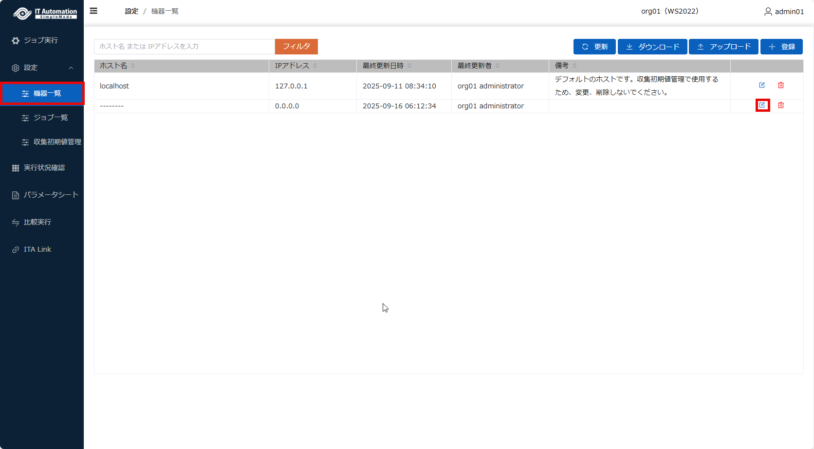
以下の項目をターゲットマシンに合わせて変更し、「保存」ボタンを押します。
項目 |
設定例 |
|---|---|
ホスト名 |
（例）target-ws01 |
IPアドレス |
（例）192.168.10.1 |
ユーザー名 |
（例）Administrator |
パスワード |
（例）password |
追加オプション |
RHEL9の場合、対象サーバーおよびユーザーのsudo設定に合わせてansible_sudo_passを設定する。 |
※その他の項目は必要に応じて変更してください。
Windows Server 2022の場合
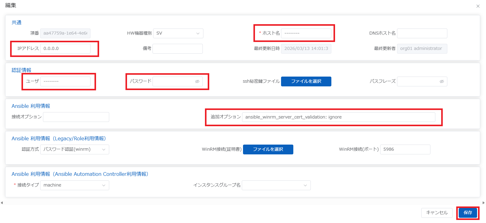
RHEL9の場合
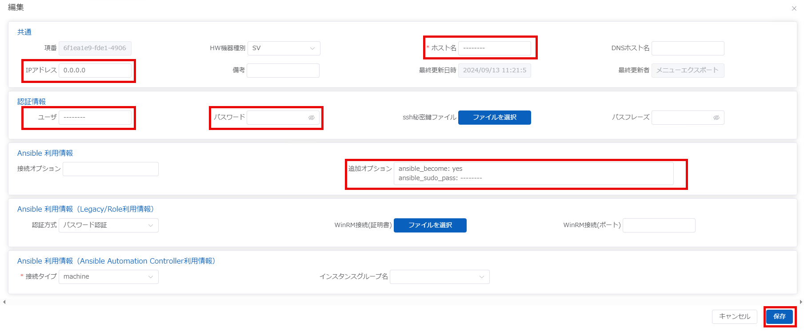
3. 初回のパラメータ収集と構築¶
ジョブ実行メニューから、ターゲットマシンからのパラメータ収集、自動構築をウィザード形式で実行します。ここでは初めてSimpleModeで収集・構築を行うシナリオを想定して説明します。
3-1. 実機からパラメータを収集する¶
実機からパラメータを収集し、収集結果を保存します。
収集したパラメータは、パラメータシートメニューから参照できる他、編集して構築用パラメータとして流用することもできます。
3-1-1. ジョブウィザードの開始¶
メニューから[ジョブ実行]を選択します。
「オペレーションを新規登録する」を選択します。
任意のオペレーション名を入力し、「つぎへ」を押します。
（例：WS2022収集_20241001_01）
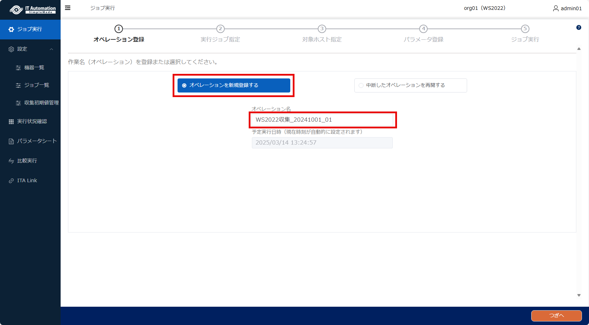
Tip
オペレーション名の自動入力
オペレーション名の入力欄を選択状態にすると、日時情報に基づく一意なオペレーション名の候補が表示されます。
これを選択すると、そのオペレーション名を自動入力することができます。
3-1-2. 収集ジョブの指定¶
Conductorに「＜OS名＞-収集」が選択されていること、実行したいMovementにチェックを入れて「つぎへ」を押します。
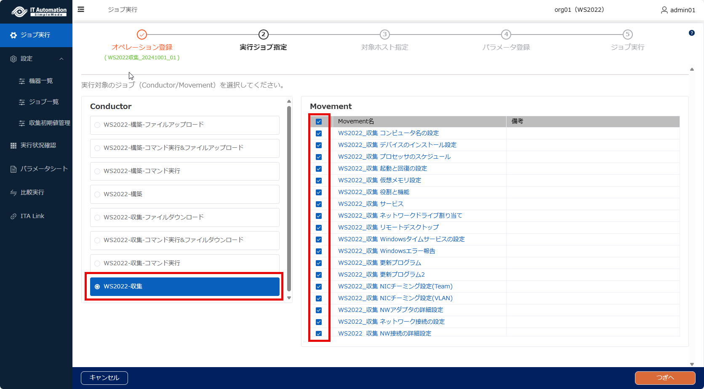
3-1-3. ホストの指定¶
"ジョブ実行前の準備"で設定したホストにチェックが入っていることを確認し、「つぎへ」を押します。
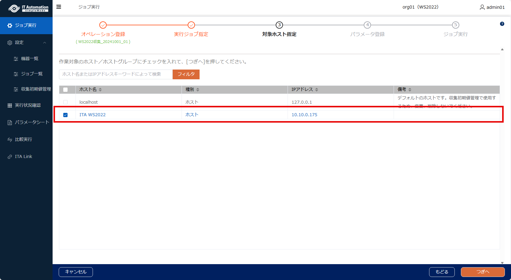
3-1-4. パラメータ登録¶
ここでは収集のためのパラメータを入力します。
「コピー元オペレーション名」に予め登録した収集初期値管理用オペレーション（ここでは、「WS2022-収集-ディフォルト」）を選択して、すべてのMovementをチェックして一括コピーを押します。表示されたメッセージで「OK」を選択します。
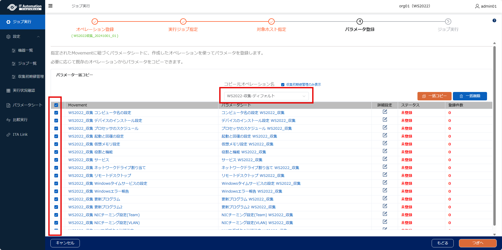
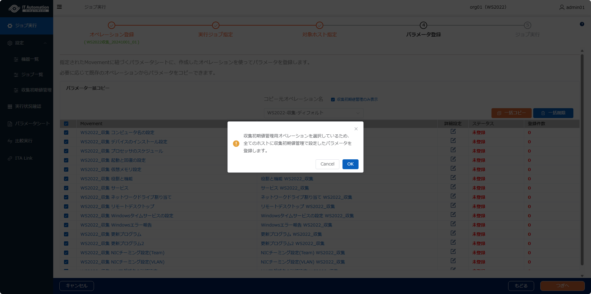
すべてのパラメータシートのステータスが"登録済"となっていることを確認し、「つぎへ」を押します。
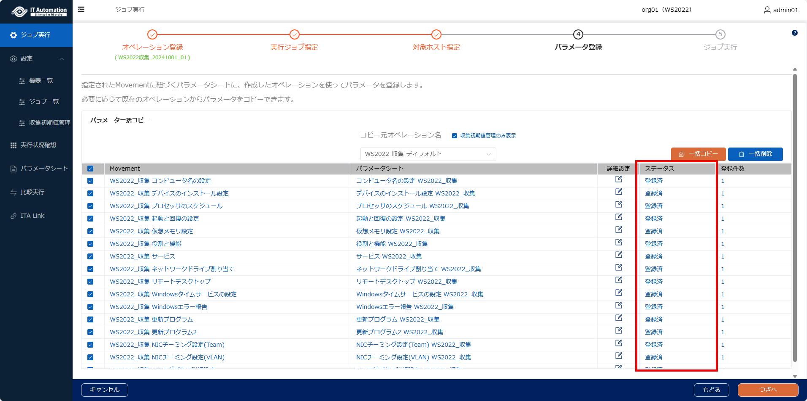
Tip
収集結果のフィルタリング設定
一部のパラメータシートでは、収集データを絞り込むためのキーワードが登録されています。
フィルタするキーワードを変更する場合、「詳細設定」ボタンを押して、フィルタ用パラメータを変更します。
※キーワードを変更すると取得するデータの件数が増加する可能性があります。
データの件数が多すぎると、性能面で問題が出る可能性があります。
また、件数が一定値を超えるとジョブが異常終了します。
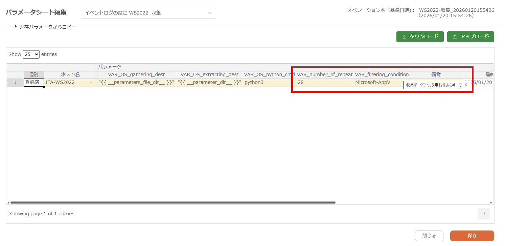
Tip
複数ホストのパラメータ登録
「コピー元オペレーション名」に収集初期値管理用オペレーションを選択する場合、
全てのホストに収集初期値管理で設定したパラメータを登録します。
収集初期値管理用オペレーション以外を選択する場合、コピー元に登録したホストだけコピーします。
収集初期値管理機能については、7. 収集初期値管理機能を参照してください。
3-1-5. ジョブ実行¶
ここまでに設定した内容を確認して、「実行」を押します。
「実行」を押し、表示されたポップアップで「OK」を押すと実機からのパラメータ収集処理が始まります。
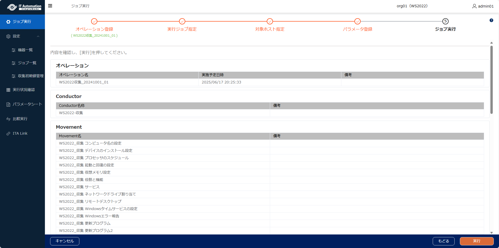
実行後は、「実行状況確認」画面に自動遷移します。
ここでは、ジョブの実行状況とログを確認できます。
「詳細」ボタンを押すと、そのオペレーションの実行状況をMovement単位で確認できます。
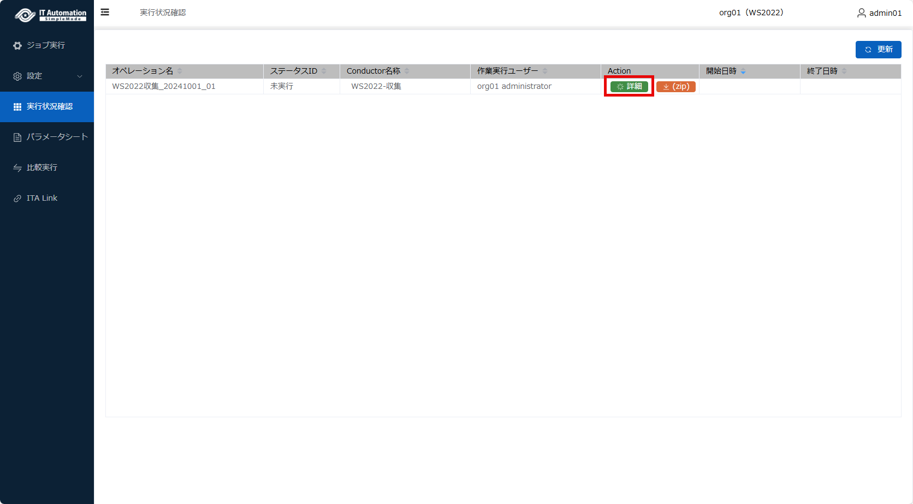
Movement名をクリックすると、ジョブ実行時のログを参照することができます。
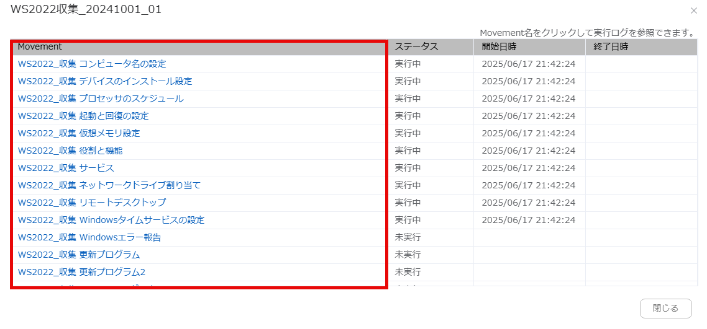
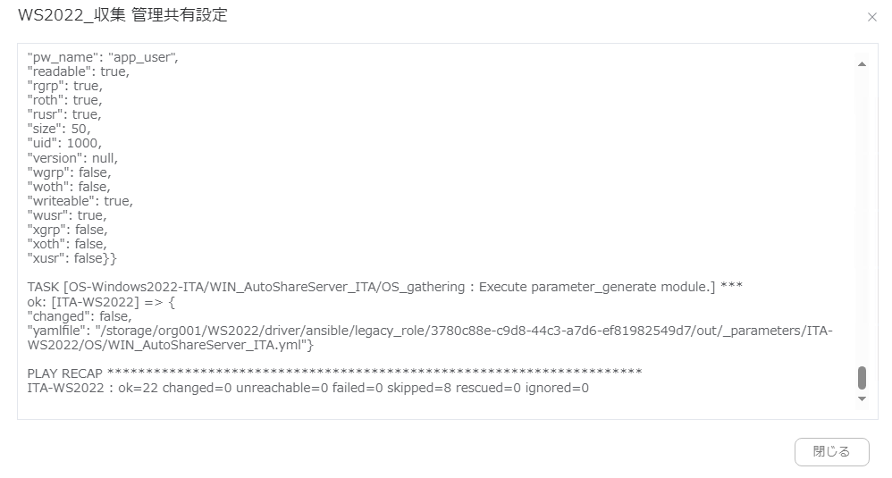
Tip
ジョブ実行中の操作
ジョブはバックグラウンドで実行されるため、実行中にWebブラウザを閉じても構いません。
ジョブが実行している間、仮想マシンは終了しないでください。
Tip
ジョブがエラー（異常終了）した場合
エラーになったMovementを再実行することはできません。
再実行する場合、新しいウィザードを開始して実行したいMovementを選択し、パラメータの変更などでエラー原因を解消して実行してください。
3-1-6. 収集結果の確認¶
実行状況確認画面で”正常終了"となったMovementの収集結果は、「パラメータシート」メニューから参照できます。
「Conductorから選ぶ」の「＜OS名＞-収集」を選択して「つぎへ」を押します。
対象とするパラメータシートにチェックを入れて「つぎへ」を押します。
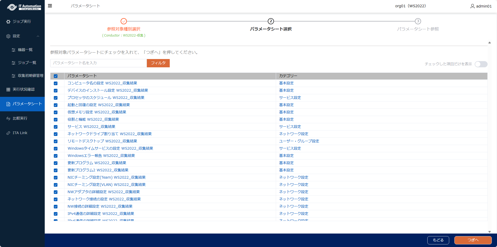
対象のオペレーションは、プルダウンから選択できます。
オペレーションを選択すると、パラメータシート毎の登録件数が表示されます。
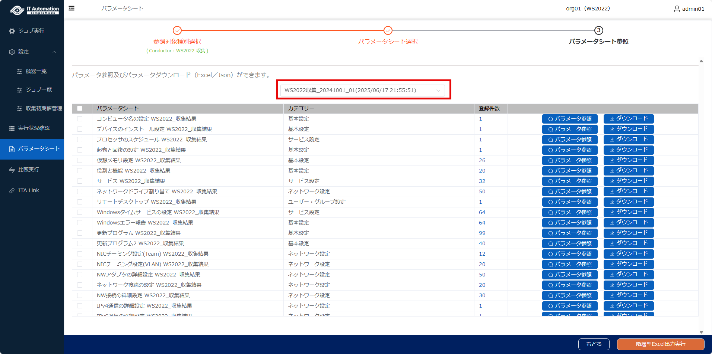
参照したいパラメータシートの「パラメータ参照」ボタンを押すと、パラメータ参照画面が開きます。
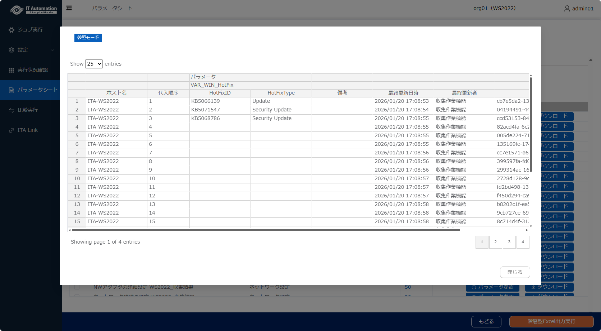
詳しくは、パラメータシート参照機能を参照してください。
3-2. 収集したパラメータを変更して実機に反映する¶
収集結果を流用して構築用パラメータを作成・構築を実行します。
3-2-1. ジョブウィザードの開始¶
メニューから[ジョブ実行]を選択します。
この画面が表示された場合、「新しいウィザードの開始」を押します。
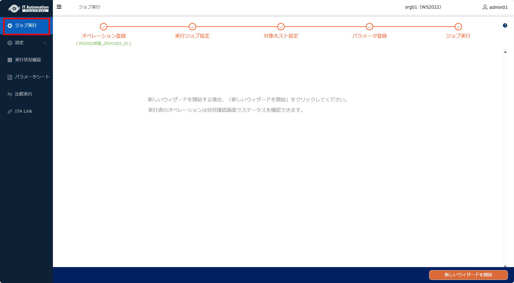
「オペレーションを新規登録する」を選択します。
任意のオペレーション名を入力し、「つぎへ」を押します。
（例：WS2022構築_20241001_01）
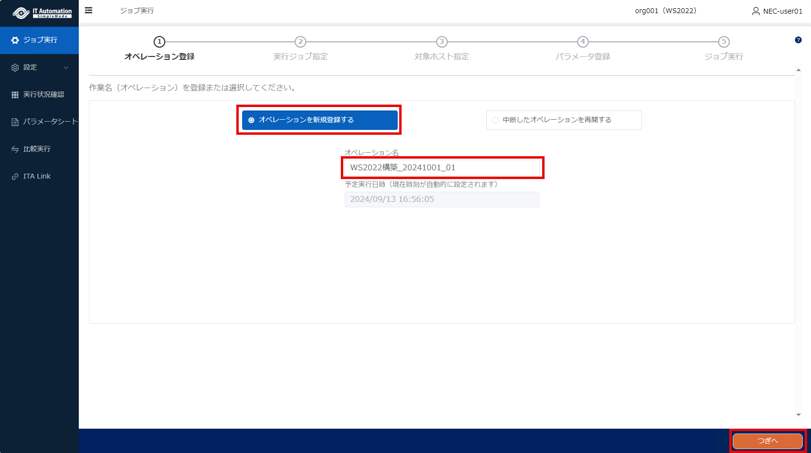
3-2-2. 構築ジョブの指定¶
Conductorに「＜OS名＞-構築」を選択します。
実行したい（設定を変更したい）Movementにチェックを入れて「つぎへ」を押します。
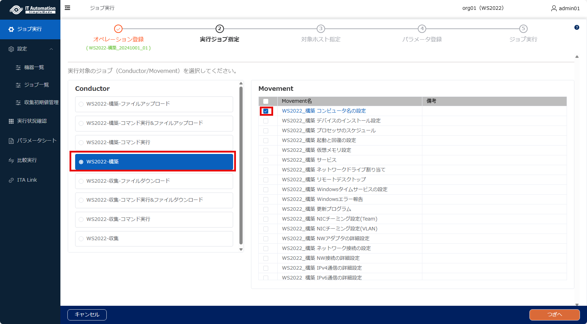
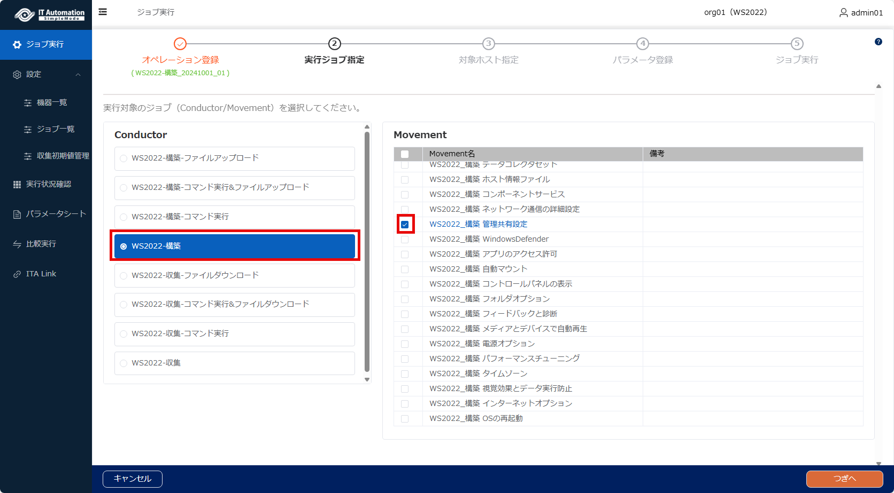
3-2-3. ホストの指定¶
"3-1. 実機からパラメータを収集する（初回）"で設定値を収集したホストにチェックが入っていることを確認し、「つぎへ」を押します。
3-2-4. パラメータ登録¶
3-2-4-1. 収集結果のコピー¶
収集ジョブで取得した収集結果を流用して、構築用パラメータを入力します。
①「コピー元パラメータシート種別」を"収集結果”に設定します。
②「コピー元オペレーション名」に収集ジョブ実行時に選択したジョブを選択します。ここでは例として「WS2022収集_20241001_01」を選択します。
③変更対象のMovement（パラメータシート）にチェックを入れます。
④「一括コピー」ボタンを押すと、収集結果が現在のウィザード（オペレーション）にコピーされます。
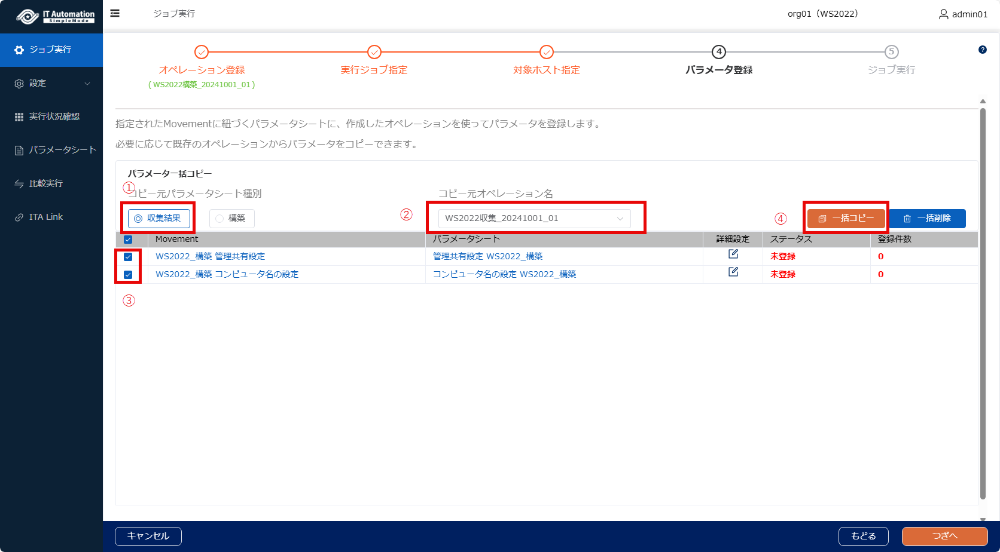
Tip
コピー元オペレーション名の選択
コピー元オペレーション選択において、実行済み以外の未実行および実行エラーのオペレーションを選択できます。
3-2-4-2. パラメータの編集¶
パラメータを編集するには、"詳細設定"アイコンを押します。
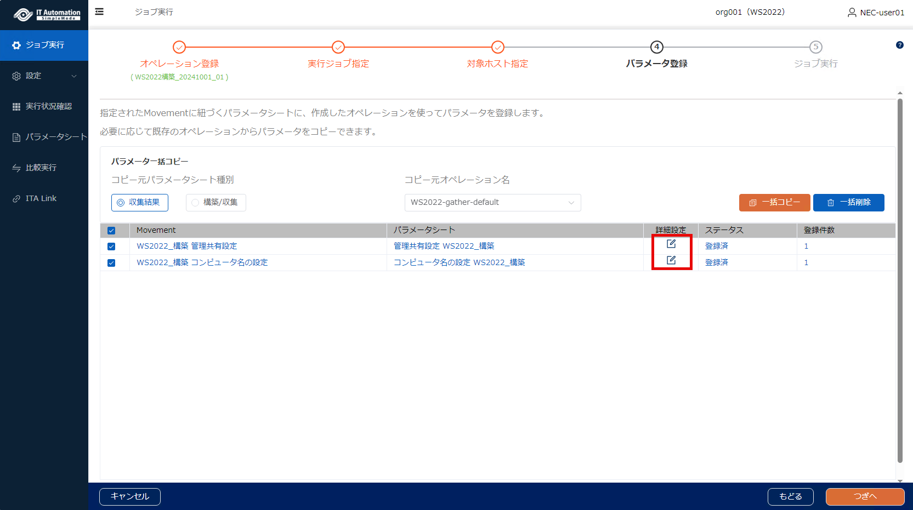
Tip
変更対象選択の操作
パラメータシート一覧に戻って"詳細設定"を選択、または編集画面にて変更対象が選択できます。
この画面ではスプレッドシート形式でパラメータを変更できます。
変更したい設定項目の値を変更、または追加し、「保存」を押します。
ここでは例として、Description（コンピュータの説明）の値を変更しています。
パラメータが問題なく保存されたら、「閉じる」ボタンを押します。
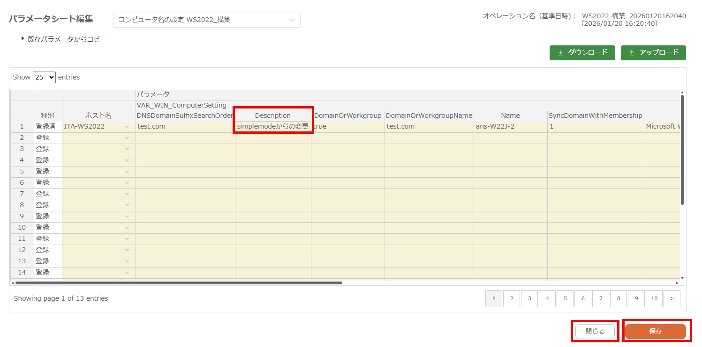
Tip
スプレッドシートの操作
最下部のレコードを選択した状態でEnterキーを押すと行が追加されます。
Microsoft Excelと同様に行コピーや複数セルのコピー・ペーストも可能です。
また、この画面でコピーした内容をお手元のMicrosoft Excelに貼り付けることもできます.
Tip
ページングの操作
画面左上のプルダウンメニューから、1ページあたりの表示レコード数を選択できます。
画面右下にはページ番号とページ移動用の「＜」「＞」ボタンがあり、ページを切り替えることができます。
いずれのページで保存ボタンを押しても、ページ遷移前に変更した内容も含め一括で保存可能です。
ダウンロード時には、全ページのデータを含む形式でエクスポートされます。
ファイルアップロード型パラメータの編集方法としては、一度ダウンロードしたファイルを修正し、再度アップロードする形となります。
ここでは例として、ファイルアップロード型パラメータの変更手順を説明します。
ファイルアップロード型パラメータのファイル名リンクをクリックし、ファイルをダウンロードします.
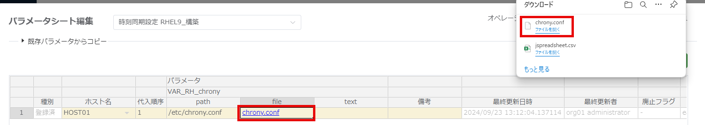
ファイル名を右クリックし、「Upload」をクリックすると、修正したファイルをアップロードして「保存」を押します。
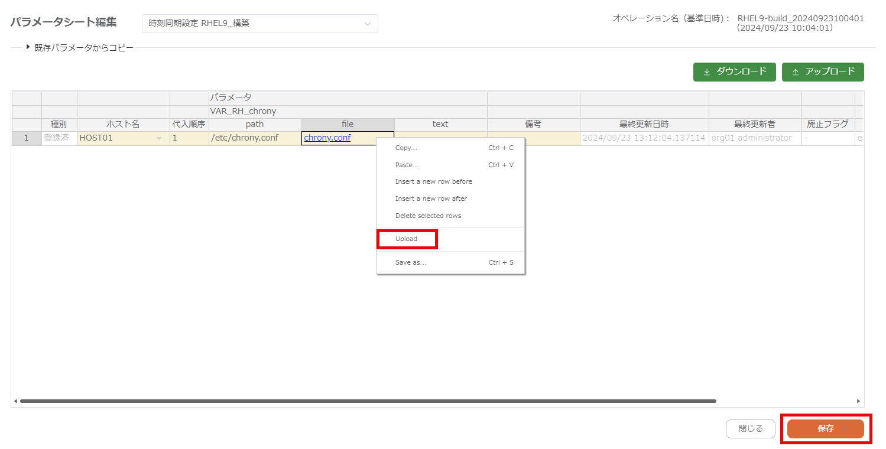
ここまでの操作を、変更対象のパラメータシート毎に実施します。
すべてのパラメータシートのステータスが"登録済"となっていることを確認し、「つぎへ」を押します。
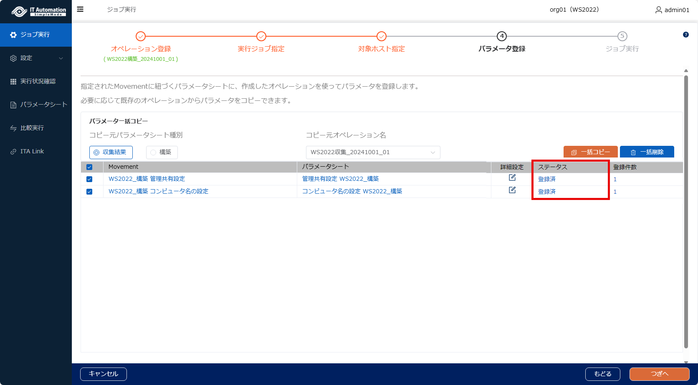
Tip
「パラメータ編集」ボタンからスプレッドシートでパラメータを変更する以外にも、ExcelファイルやJSONファイルのダウンロード・アップロードを行うことが可能です。
「ダウンロード」ボタンを押して形式を選択すると、ファイルがダウンロードされます。
「アップロード」ボタンで編集したファイルを選択して登録ができます。
Tip
「ダウンロード」ボタンを押して形式を選択すると、ファイルがダウンロードされます。
「アップロード」ボタンで編集したファイルを選択して登録ができます。
3-2-5. ジョブ実行¶
ここまでに設定した内容を確認して、「実行」を押します。
「実行」を押し、表示されたポップアップで「OK」を押すと実機へのパラメータ反映処理（構築）が始まります。
実行後は、「実行状況確認」画面に自動遷移します。
以降の手順は「3-1. 実機からパラメータを収集する（初回）」と同様です。
4. 2回目以降のパラメータ収集と構築¶
4-1. 実機からパラメータを収集する（２回目以降）¶
初回の収集では、デフォルトで設定済のオペレーションを利用してジョブを実行しました。
2回目以降は、新規オペレーションを作成し、過去に実行したオペレーションの設定値を流用してジョブを実行します。
4-1-1. 収集ジョブの開始¶
メニューから[ジョブ実行]を選択します。
この画面が表示された場合、「新しいウィザードの開始」を押します。
「オペレーションを新規登録する」を選択します。
任意のオペレーション名を入力し、「つぎへ」を押します。
（例：WS2022収集_20241001_02）
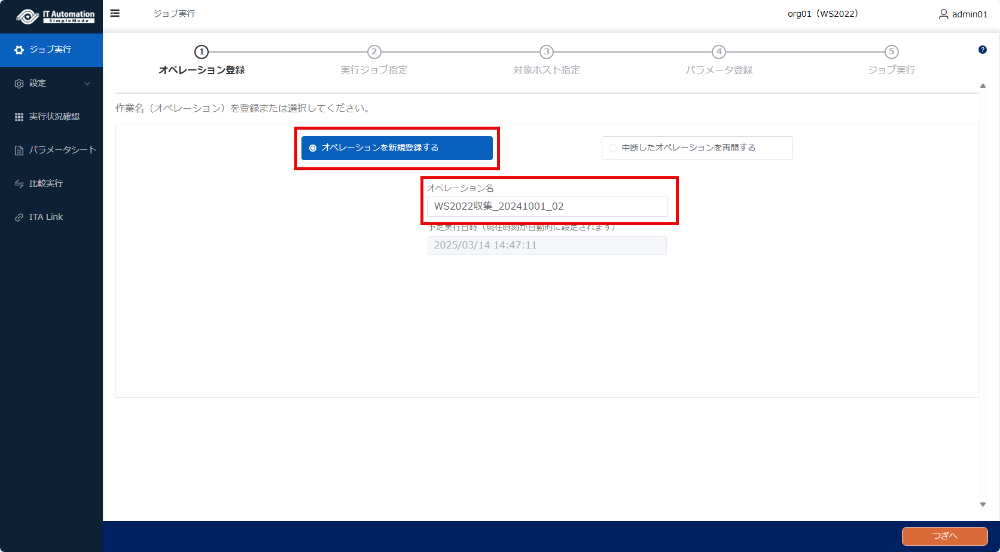
4-1-2. 収集ジョブの指定¶
Conductorに「＜OS名＞-収集」を選択します。
実行したいMovement（収集したいパラメータ）にチェックを入れて「つぎへ」を押します。
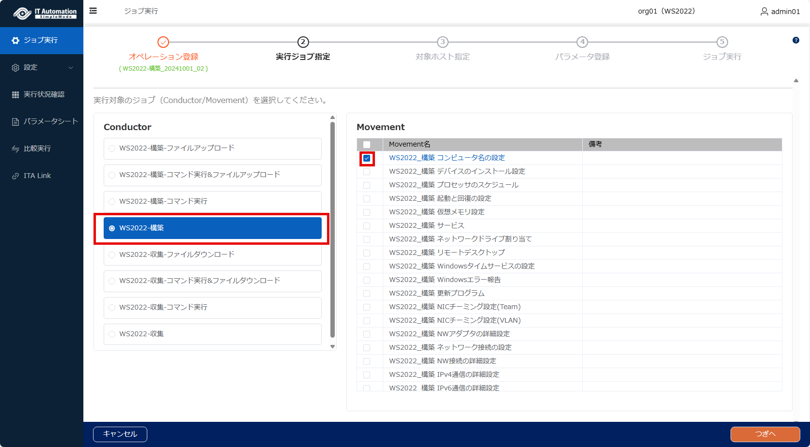
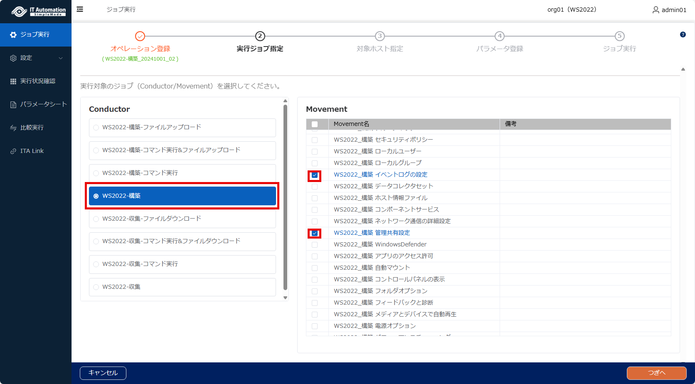
4-1-3. ホストの指定¶
対象のホストにチェックが入っていることを確認し、「つぎへ」を押します。
※次の画面で過去の設定値を流用できるのは、以前に収集を実行済のホストのみです。
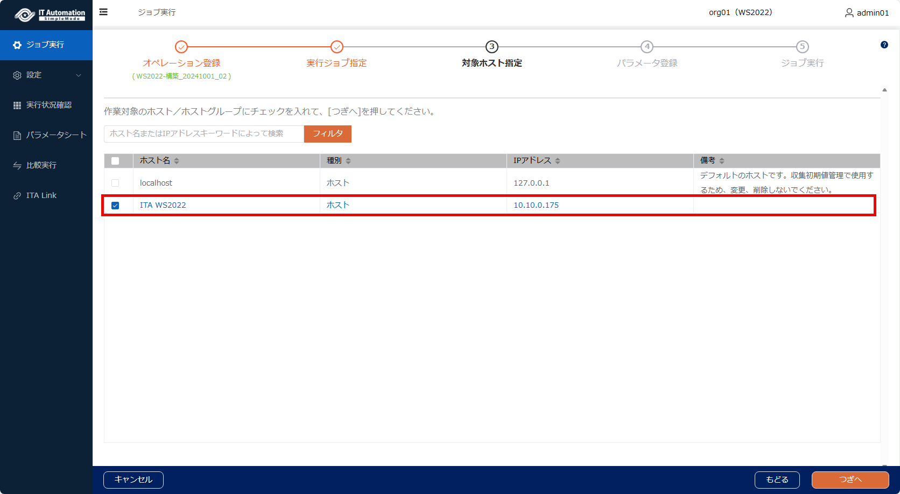
4-1-4. パラメータ登録¶
収集のためのパラメータを入力します。 手動で入力することもできますが、コピー機能を用いて以前のオペレーションまたは収集初期値管理用オペレーションの設定を流用することができます。
①「コピー元オペレーション名」に収集ジョブ実行時に選択したジョブを選択します。 収集初期値管理のみ表示を外して、以前のオペレーションが表示できます。 ここでは例として「WS2022収集_20241001_01」という以前のオペレーションを選択します。
②すべてのMovement（パラメータシート）にチェックを入れます。
③「一括コピー」ボタンを押すと、収集設定が現在のウィザード（オペレーション）にコピーされます。
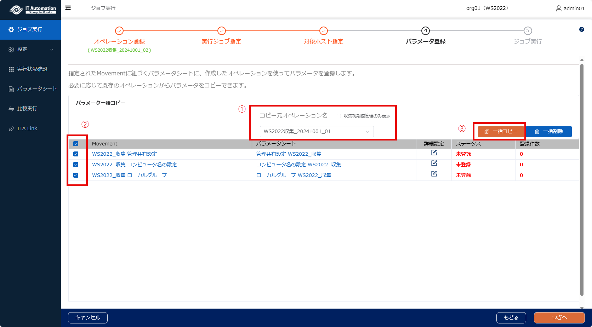
すべてのパラメータシートのステータスが"登録済"となっていることを確認し、「つぎへ」を押します。
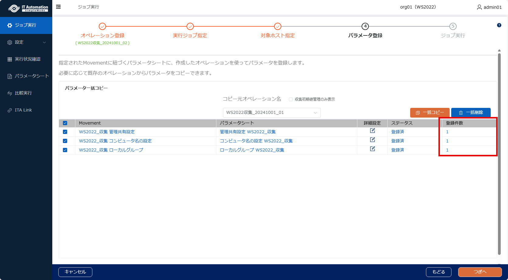
Tip
収集結果のフィルタリング設定
一部のパラメータシートでは、収集データを絞り込むためのキーワードが登録されています。
フィルタするキーワードを変更する場合、「詳細設定」ボタンを押して、フィルタ用パラメータを変更します。
※キーワードを変更すると取得するデータの件数が増加する可能性があります。
データの件数が多すぎると、性能面で問題が出る可能性があります。
また、件数が一定値を超えるとジョブが異常終了します。
4-1-5. ジョブ実行¶
ここまでに設定した内容を確認して、「実行」を押します。
「実行」を押し、表示されたポップアップで「OK」を押すと実機からのパラメータ収集処理が始まります。
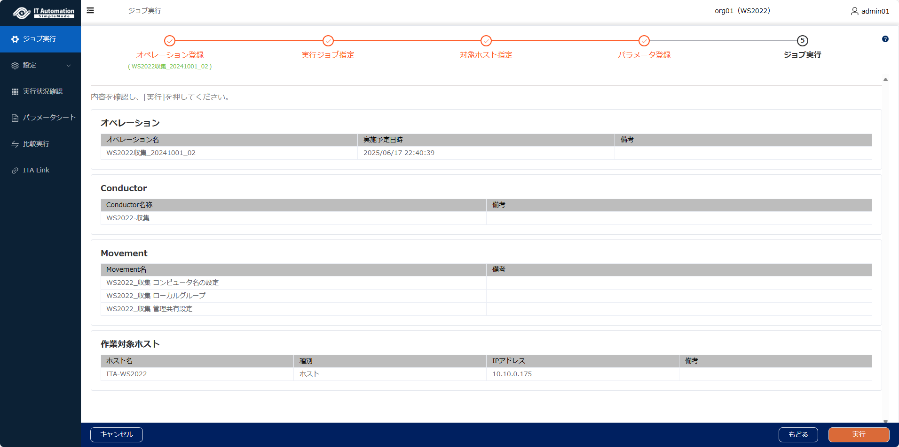
実行後は、「実行状況確認」画面に自動遷移します。
以降の手順は「3-1. 実機からパラメータを収集する（初回）」と同様です。
5. ターゲットホストの追加¶
5-1. ターゲットホストを追加する¶
ターゲットホストを追加する場合、ここまでに説明した準備手順、ジョブの実行手順に、以下の内容を加えていきます。
章 |
項目 |
説明 |
|---|---|---|
5-1-1 |
機器一覧でホストを追加する |
機器一覧に2台目以降のホストを新規に追加する |
5-1-2 |
ウィザードで対象ホストに指定 |
ジョブ実行ウィザードで対象ホストとしてチェックする |
5-1-3 |
ウィザードでパラメータを登録 |
ジョブ実行ウィザードで追加したホストのパラメータを登録する |
5-1-1. 機器一覧でホストを追加する¶
「設定」から「機器一覧」を選択します。
「登録ボタン」を押します。
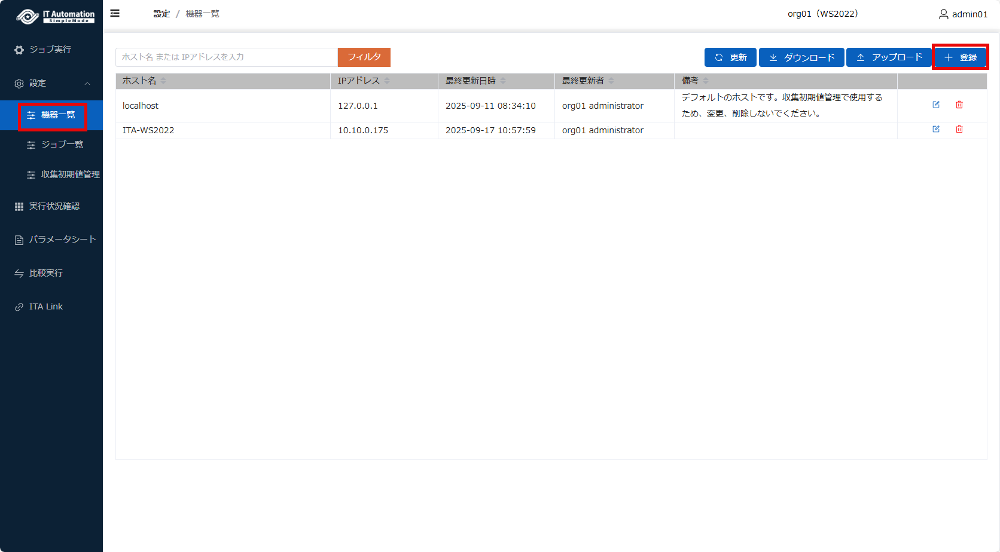
各項目をターゲットホストに合わせて入力し、「登録」ボタンを押します。
以下、Windows Serverがターゲットの場合の入力例を示します。
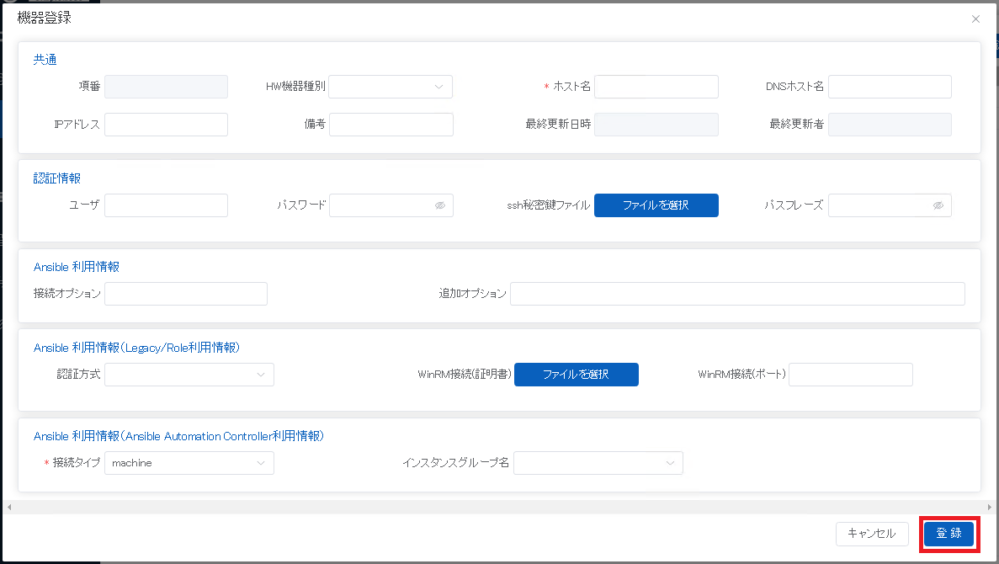
項目 |
設定例 |
|---|---|
HW機器種別 |
（例）SV |
ホスト名 |
（例）ITA-WS2022-2 |
IPアドレス |
（例）192.168.10.2 |
ユーザー名 |
（例）Administrator |
パスワード |
（例）password |
追加オプション |
（例）ansible_winrm_server_cert_validation: ignore |
認証方式 |
（例）パスワード認証(WinRM) |
WinRM接続(ポート) |
（例）5986 |
接続タイプ |
（例）machine |
ホストが追加されたことを確認します。
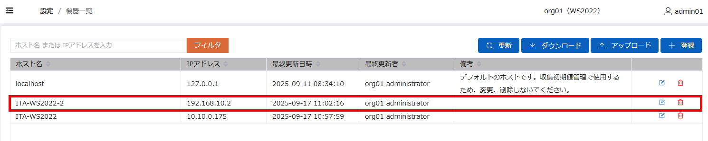
※追加したホストにジョブを実行するためには、WinRMやssh等、Ansibleからの接続を受け付ける設定を実施しておく必要があります。
5-1-2. ウィザードで対象ホストに指定¶
他の手順で説明した内容と同様に、ジョブ実行ウィザードを開始します。
[対象ホスト指定]で、初回収集で対象としたホストと追加したホストにチェックを入れて「つぎへ」を押します。
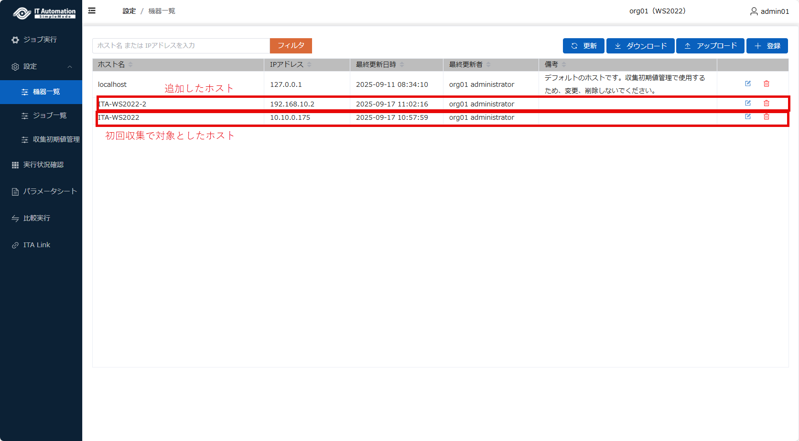
5-1-3. ウィザードでパラメータを登録¶
ここでは構築ジョブを実行する場合を例に説明します。
最初に以前に実行したオペレーションの収集結果からパラメータをコピーします。
「詳細設定」ボタンを押します。
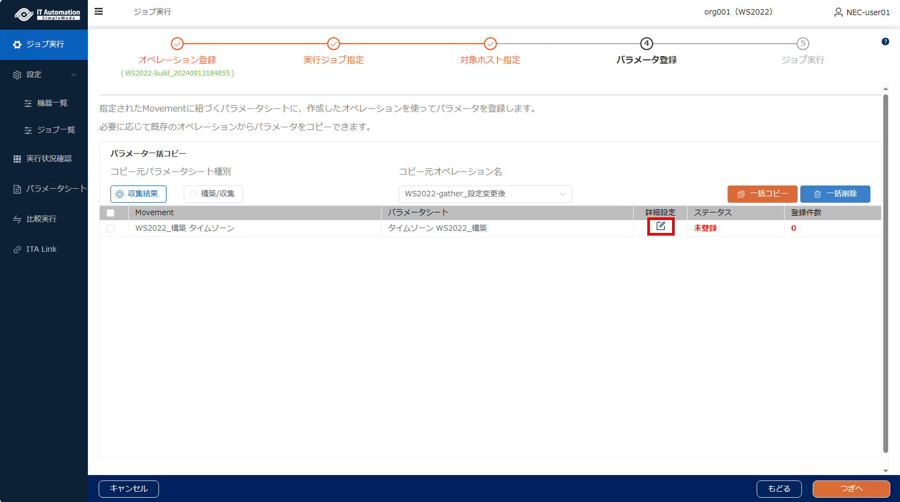
以下の手順に沿って、収集結果をコピーします。
①「既存パラメータからコピー」をクリックする。
②パラメータシートに「タイムゾーン WS2022_収集結果」を選択する。
③オペレーション名に収集した際のオペレーションを選択する。 ここでは「WS2022収集_20241001_01」を選択する。
④ホストに初回収集で対象にしたホストを選択する。
⑤パラメータ参照をクリックして、コピー元の対象パラメータを確認する。
⑥「コピー」ボタンを押す。
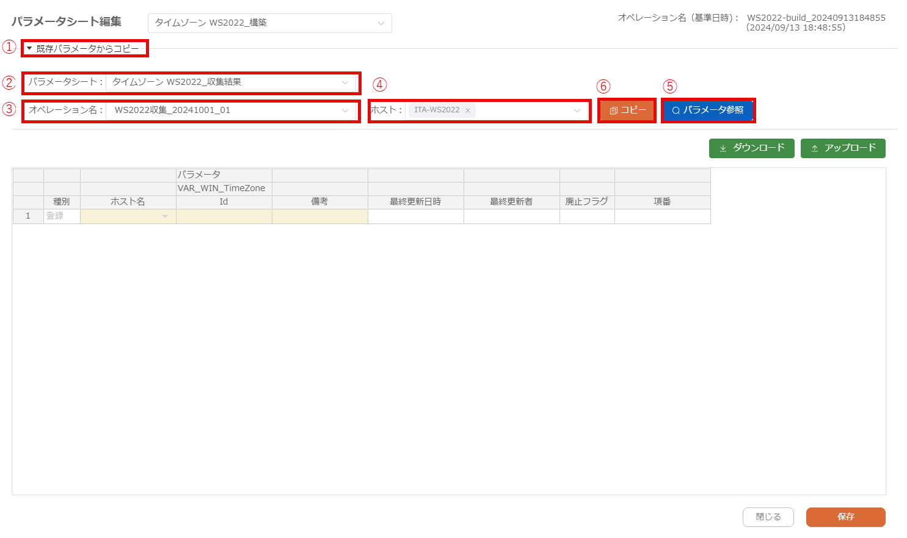
コピー元と同じパラメータがコピーされることを確認します。
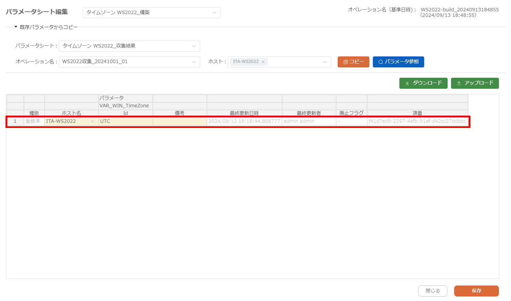
既に入力済の内容を参考に、追加したホストのパラメータを入力します。
※スプレッドシートの行は、次のいずれかの方法で追加できます。
最下行でEnterキーを押す
行番号を右クリックし、「Insert a new row」をクリックする
パラメータを入力後、「保存」ボタンを押します。
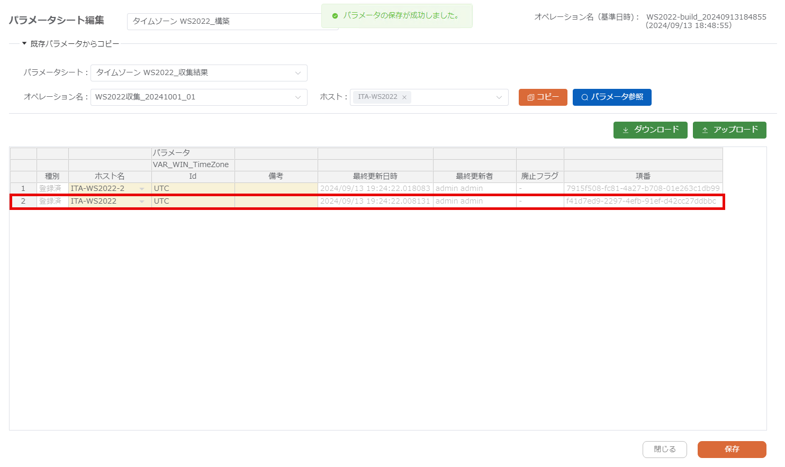
すべてのパラメータシートに対してこの手順を繰り返します.
Tip
今後のバージョンで収集設定の初期値入力を効率化する機能の実装を予定しています。
以降の手順は他のジョブ実行手順と同様です。
6. パラメータ比較¶
SimpleModeでは、収集結果や構築用パラメータの比較を行うことができます。
本手順では、収集結果同士の確認を例に、実行手順を説明します。
6-1. 比較の前提条件¶
パラメータの比較を行うためには、以下の条件を満たしている必要があります。
2件以上のオペレーションが実行済
同じパラメータシート、または対応するパラメータシートにパラメータが登録済
本手順では、以下の2件のオペレーションを実行済の状態であることを前提とします。
オペレーション |
実行内容 |
|---|---|
WS2022-gather_設定変更前 |
WS2022_収集 タイムゾーン を実行 |
WS2022-gather_設定変更後 |
WS2022_収集 タイムゾーン を実行 |
※同じConductor、Movementを実行して、設定値を収集しています。
6-2. 比較の開始¶
メニューから[比較実行]を選択します.
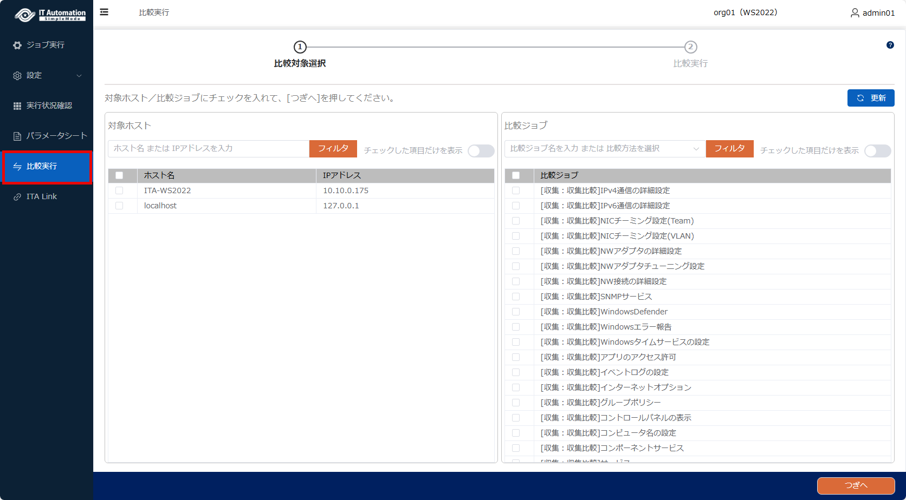
左側の[対象ホスト]欄で、対象とするホストにチェックを入れます。
右側の[対象ジョブ]欄で、比較ジョブを選択します。
今回のシナリオでは、事前に取得していた「Windowsタイムゾーンの設定」のパラメータ収集結果を比較します。
「[収集：収集比較]Windowsタイムゾーンの設定」にチェックを入れて「つぎへ」を押します。
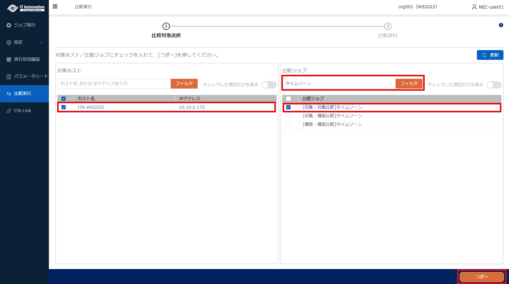
Tip
比較の種類
比較の種類は以下の３種をバンドルしています。
収集：収集比較 実機から収集したパラメータ（収集結果）同士を比較します。
収集：構築比較 実機から収集したパラメータ（収集結果）と設定変更に用いたパラメータ（構築設定）を比較します。
構築：構築比較 設定変更に用いたパラメータ（構築設定）同士を比較します。
6-3. 比較の実行¶
前ページで選択した条件に沿って比較を行う画面です。
ここでは、比較対象のオペレーションを2件選択します。
対象のオペレーションは、ダブルクリックすることでプルダウンから選択できます。
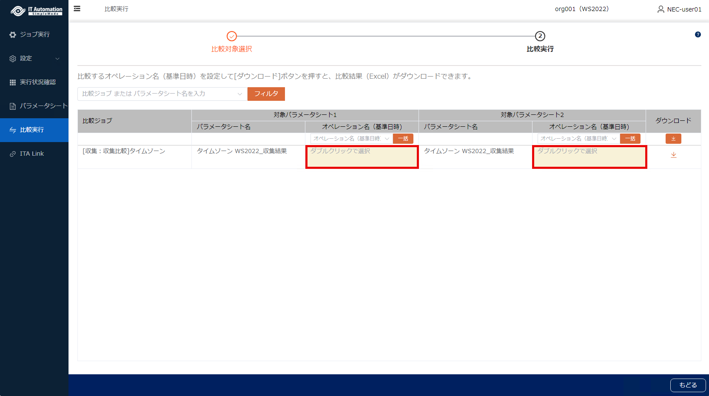
ここでは、前述した条件に記載したオペレーションを指定します。
[ダウンロード]ボタンを押すと、比較結果をExcelファイルでダウンロードすることができます。
6-4. 比較結果の確認¶
ダウンロードされたExcelファイルを開きます.
[比較条件_結果一覧]シートには、比較結果のサマリが記載されています。比較結果に差分がある場合、比較結果には「差分あり」と表示されます。
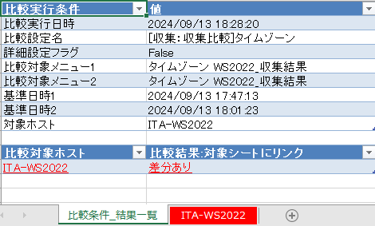
ホスト名シートには、比較結果の詳細が記載されています。
差分があるパラメータは[差分]列に"●"が表示され、該当行の値は赤字で表示されます。
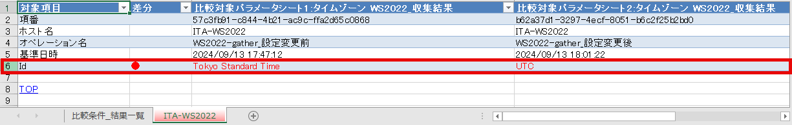
6-5. ファイルアップロード型パラメータの比較結果の確認¶
ファイルアップロード型パラメータを含むジョブを比較すると、ファイルアップロード型パラメータのファイルの中身に差分がない場合は、6-4. 比較結果の確認と同様に、比較結果のダウンロードはExcelファイルとなります。
[比較条件_結果一覧]シートには、比較結果のサマリが記載されています。
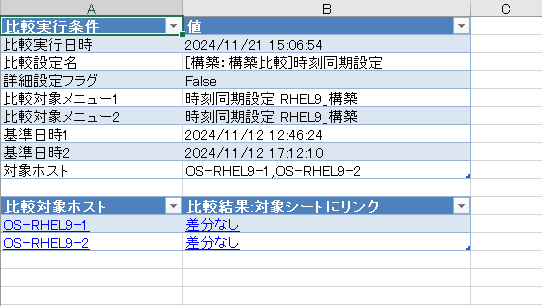
ファイルアップロード型パラメータのファイルの中身に差分がある場合は、比較結果のダウンロードはZIPファイルとなります。
ZIPファイルには、下記のファイルが含まれています。
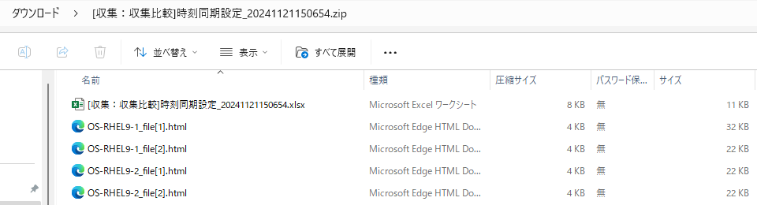
ファイル名 |
説明 |
|---|---|
比較ジョブ名_YYYYMMDDHHmmSS.xlsx |
比較ジョブの比較結果ファイル ファイルアップロード型の内容比較結果は、htmlファイルを参照。 |
ホスト名_パラメータ名[代入順].html |
ファイルアップロード型の内容比較結果ファイル ファイル内容に差分があるパラメータのみ比較ファイルを作成。 例：OS-RHEL9-1_file[1].html ホスト名：OS-RHEL9-1 パラメータ名：file 代入順：1 |
htmlファイルは、差分のある箇所の周辺のみ表示します。
Tip
ファイルアップロード型のファイル内容差分の有無について
ダウンロードされたファイルがZIPファイルの場合は、ファイル内容に差分があると判断できます。ただし、制限事項のNo.5にも記載の通り、ZIP内のExcelファイルには「差分なし」と誤って表示される点に注意してください。個々のhtmlファイルを参照することで差分が確認できます。
7. 収集初期値管理機能¶
SimpleModeは、収集設定の初期値の管理機能を利用して、収集設定の初期値が新規作成・更新できます。ジョブ実行の際には、収集設定の初期値を選択して、選択されたすべてのホストに一括でコピーすることができます。
7-1. 収集設定の初期値の新規作成¶
メニューから「設定」「収集初期値管理」を選択します。「オペレーション名」で「オペレーション登録」ボタンを押します。
オペレーション名を入力して、「登録」ボタンを押します。
「パラメータシート選択」ボタンを押して、パラメータシートを選択します。
左側の一覧からパラメータシートをチェックして、「>」ボタンを押してから「保存」ボタンを押します。
「詳細設定」ボタンを押して、パラメータシートの設定値を更新します。
下記の手順に沿って他のオペレーションから初期値がコピーできます。手動でパラメータを入力することも可能です.
①「既存パラメータからコピー」をクリックする。
②オペレーション名にコピー元のオペレーションを選択する。
③「コピー」ボタンを押す。
手動でパラメータを編集した後、「保存」ボタンを押します。
7-2. 収集設定の初期値の更新¶
メニューから「設定」「収集初期値管理」を選択します。「オペレーション名」に登録した収集初期値管理用オペレーションを選択します。
ここでは例として予め登録した「WS2022-収集-ディフォルト」を選択します。
登録したパラメータシートが表示されますので、「ステータス」でパラメータを登録済みであるか、「登録件数」で登録済みパラメータ件数が確認できます。
「詳細設定」ボタンを押して、パラメータシートの設定値を更新します。
8. パラメータシート参照機能¶
SimpleModeは、構築／収集／収集結果パラメータシートの参照機能を提供します。
8-1. パラメータシート参照¶
メニューから「パラメータシート」を選択します。
8-1-1. パラメータシート種別選択¶
「メニューグループから選ぶ」あるいは「Conductorから選ぶ」が選択できます。
「メニューグループから選ぶ」の場合、収集/構築/収集結果のいずれかが選択できます。対象パラメータシートについては、下記の表に記載します。
メニューグループ |
対象パラメータシート |
|---|---|
収集 |
「入力用/収集」配下の収集パラメータシート |
構築 |
「入力用/構築」配下の構築パラメータシート |
収集結果 |
「入力用/収集結果」配下の収集結果パラメータシート |
「Conductorから選ぶ」の場合、登録したConductorが選択できます。対象パラメータシートについては、下記の表に記載します。
Conductor |
対象パラメータシート |
|---|---|
収集Conductor |
収集結果を格納する収集結果パラメータシート |
構築Conductor |
構築パラメータシート |
8-1-2. パラメータシート対象選択¶
対象とするパラメータシートにチェックを入れて「つぎへ」を押します。
8-1-3. パラメータシート参照¶
対象のオペレーションは、プルダウンから選択できます。
オペレーションを選択すると、パラメータシート毎の登録件数が表示されます。
「パラメータシート参照」ボタンを押すと、個別パラメータ参照画面が開きます。
Tip
ページングの操作
画面左上のプルダウンメニューから、1ページあたりの表示レコード数を選択できます。
画面右下にはページ番号とページ移動用の「＜」「＞」ボタンがあり、ページを切り替えることができます。
ダウンロード時には、全ページのデータを含む形式でエクスポートされます。
8-2. パラメータシートダウンロード¶
パラメータシートは3種のファイル形式でダウンロードできます。
ITAフォーマット(Excel)：Exastro IT Automationがデフォルトで提供するExcel形式のファイル。
ITAフォーマット(Json)：Exastro IT Automationがデフォルトで提供するJSON形式のファイル。
階層型Excel：パラメータ項目を階層型で行表示し、ホストを横並びで列表示するSimpleMode独自の形式のExcelファイルです。複数のパラメータシートを1つのブックで出力できます。
8-2-1. パラメータシート一括ダウンロード¶
ダウンロードしたいパラメータシートにチェックを付け、右下の「一括ダウンロード実行」ボタンをクリックすると、複数のパラメータシートを一括でダウンロードできます。
8-2-2. パラメータシート個別ダウンロード¶
パラメータシート画面の「ダウンロード」ボタンを押すと、個別のパラメータシートをダウンロードできます。
8-2-3. 階層型Excelファイル¶
階層型Excelファイルは、パラメータ項目を階層型で行表示し、ホストを横並びで列表示するSimpleMode独自の形式のExcelファイルです。複数のパラメータシートを1つのブックで出力できます。下記の仕様になります。
各シートのサブシステム名、日付、作成者は、表紙シートの特定のセルに入力することで各シートに連動します。（Excelのセル参照機能）
目次シートには、各パラメータシートをカテゴリーで分けてリストします。
パラメータシートごとにシートを作成します。
①パラメータを階層型でA列から表示します。
②複数ホストの値を横並びで表示します。
③ファイルアップロード型パラメータシートについては、アップロードファイルの内容もセルに展開して表示します。
下記は、階層型Excelの目次シートの例です。
下記は、階層型Excelのパラメータシートの例です。
下記は、階層型Excelのファイルアップロード型パラメータシートの例です。
9. 任意コマンド実行およびファイル転送機能¶
任意コマンドの実行およびファイルを指定場所にアップロードする機能を提供します。これにより、ビルトインのジョブでは設定ができないパラメータ項目をコマンドで設定したり、設定ファイルやアップデートパッチを転送するなど、柔軟な構築に対応できます。
以下の3つのConductorから選択して、複数のコマンド実行やファイルアップロードを一連の流れで実行できます。それぞれ個別に実行することも可能です。
＜OS名＞-構築-コマンド実行
＜OS名＞-構築-ファイルアップロード
＜OS名＞-構築-コマンド実行&ファイルアップロード
任意コマンドの実行およびファイル・ディレクトリのダウンロード機能を提供します。任意コマンドを実行し、標準出力および標準エラー出力の内容を収集結果パラメータシートに登録できます。指定したファイル・ディレクトリの配下のファイルをターゲットマシンから収集できます。収集したファイル、ディレクトリ圧縮ファイルとディレクトリ構成情報は収集結果パラメータシートに登録され、ダウンロードして内容を確認できます。
以下の3つのConductorから選択して、複数のコマンド実行やファイル/ディレクトリのダウンロードを一連の流れで実行できます。それぞれ個別に実行することも可能です。
＜OS名＞-収集-コマンド実行
＜OS名＞-収集-ファイルダウンロード
＜OS名＞-収集-コマンド実行&ファイルダウンロード
Tip
例外処理における「収集」と「構築」の動作の違い
例外処理において、「収集」と「構築」は動作が異なります。収集では一つの動作で例外が発生しても他の収集動作は継続しますが、構築では一つの例外で後続の処理は停止します。
9-1. 任意コマンド実行（構築）機能¶
ジョブ実行の場合、＜OS名＞_構築 コマンド実行を選択して、パラメータシート編集画面にコマンドのパラメータを設定します。
各パラメータシート説明を以下に記載します。
パラメータ名 |
説明 |
|---|---|
type |
以下のいずれかのタイプを指定する。 |
cmd |
実行したいコマンドを指定する。 |
chdir |
移動先のディレクトリパスを指定する。 指定したディレクトリに移動してからcmdに指定したコマンドが実行される。 |
executable |
コマンドを実行するときに使われるシェルを指定する。 |
9-2. ファイルアップロード機能¶
ジョブ実行の場合、＜OS名＞_構築 ファイルアップロードを選択して、パラメータシート編集画面にコマンドとファイルアップロードのパラメータを設定します.
各パラメータシート説明を以下に記載します。
パラメータ名 |
説明 |
|---|---|
type |
以下のタイプを指定する。 |
path |
アップロードするファイルの配置先パスを指定する。 |
file |
アップロードするファイルを登録する。 |
9-3. 任意コマンド実行（構築）及びファイルアップロード機能¶
ジョブ実行の場合、＜OS名＞_構築 コマンド実行&ファイルアップロードを選択して、パラメータシート編集画面にコマンドとファイルアップロードのパラメータを設定します.
各パラメータシート説明を以下に記載します。
パラメータ名 |
説明 |
|---|---|
type |
以下のいずれかのタイプを指定する。 command：コマンドを実行。コマンドを安全に使用する場合に最適。 shell：シェルを使用してコマンドを実行。リダイレクト、コマンドチェーン等使用可能で高い利便性。 file：ファイルをアップロードして指定のパスに配置する。 |
cmd |
9-1-任意コマンド実行（構築）機能を参照してください。 |
chdir |
9-1-任意コマンド実行（構築）機能を参照してください。 |
executable |
9-1-任意コマンド実行（構築）機能を参照してください。 |
path |
9-2-ファイルアップロード機能を参照してください。 |
file |
9-2-ファイルアップロード機能を参照してください。 |
9-4. 任意コマンド実行（収集）機能¶
ジョブ実行の場合、＜OS名＞_収集 コマンド実行を選択して、パラメータシート編集画面にコマンドのパラメータを設定します。
各パラメータシート説明を以下に記載します。
パラメータ名 |
説明 |
|---|---|
VAR_OS_gathering_dest |
収集した設定情報の格納先パス。 |
VAR_OS_extracting_dest |
生成したパラメータの出力先パス。 |
VAR_OS_python_cmd |
Ansible実行マシン上で、パラメータファイル作成時に使用するpythonのコマンド。 |
VAR_OS_gathering_result |
yaml形式で出力された収集結果登録用ファイル中の収集対象の変数名。「VAR_＜OS名＞_cmd_executor」固定 |
VAR_＜OS名＞_CommandExecutor_gather |
|
- type |
以下のいずれかのタイプを指定する。 |
cmd |
実行したいコマンドを指定する。 |
chdir |
移動先のディレクトリパスを指定する。 |
executable |
コマンドを実行するときに使われるシェルを指定する。 |
収集ジョブ実行後、標準出力および標準エラー出力の内容を収集結果パラメータシートに登録できます。
各パラメータシート説明を以下に記載します。
パラメータ名 |
説明 |
|---|---|
VAR_＜OS名＞_cmd_executor |
|
- type |
収集の時に、指定したタイプ。 |
cmd |
収集の時に、指定したコマンド。typeがcommandとshellの場合に有効。 |
chdir |
収集の時に、指定した移動先のディレクトリパス。typeがcommandとshellの場合に有効。 |
executable |
収集の時に、指定したコマンドを実行するときに使われるシェル。typeがshellの場合に有効。 |
stdout |
コマンド標準出力(stdout)のログファイル。typeがcommandとshellの場合に有効。 |
stderr |
コマンド標準エラー出力(stderr)のログファイル。typeがcommandとshellの場合に有効。 |
9-5. ファイル・ディレクトリのダウンロード機能¶
ジョブ実行の場合、＜OS名＞_収集 ファイルダウンロードを選択して、パラメータシート編集画面にファイル・ディレクトリのダウンロードのパラメータを設定します。
各パラメータシート説明を以下に記載します。
パラメータ名 |
説明 |
|---|---|
VAR_OS_gathering_dest |
収集した設定情報の格納先パス。 |
VAR_OS_extracting_dest |
生成したパラメータの出力先パス。 |
VAR_OS_python_cmd |
Ansible実行マシン上で、パラメータファイル作成時に使用するpythonのコマンド。 |
VAR_OS_gathering_result |
yaml形式で出力された収集結果登録用ファイル中の収集対象の変数名。「VAR_＜OS名＞_filedownload」固定 |
VAR_＜OS名＞_CommandExecutor_gather |
|
- type |
以下のいずれかのタイプを指定する。 |
path |
ダウンロード対象ファイルまたはディレクトリのパス。 |
収集ジョブ実行後、収集したファイル、ディレクトリ圧縮ファイルとディレクトリ構成情報は収集結果パラメータシートに登録され、ダウンロードして内容を確認できます.
各パラメータシート説明を以下に記載します。
パラメータ名 |
説明 |
|---|---|
VAR_＜OS名＞_cmd_executor |
|
- type |
収集の時に、指定したタイプ。 |
path |
収集の時に、指定したダウンロード対象ファイルまたはディレクトリのパス。typeがfileとdirectoryの場合に有効。 |
file |
typeがfileの場合、ダウンロード対象ファイル。 |
dircontent |
ダウンロード対象ディレクトリの階層を記録したファイル。typeがdirectoryの場合に有効。 |
9-6. 任意コマンド実行（収集）及びファイル・ディレクトリのダウンロード機能¶
ジョブ実行の場合、＜OS名＞_収集 コマンド実行&ファイルダウンロードを選択して、パラメータシート編集画面にコマンドとファイル・ディレクトリのダウンロードのパラメータを設定します。
各パラメータシート説明を以下に記載します。
パラメータ名 |
説明 |
|---|---|
VAR_OS_gathering_dest |
収集した設定情報の格納先パス。 |
VAR_OS_extracting_dest |
生成したパラメータの出力先パス。 |
VAR_OS_python_cmd |
Ansible実行マシン上で、パラメータファイル作成時に使用するpythonのコマンド。 |
VAR_OS_gathering_result |
yaml形式で出力された収集結果登録用ファイル中の収集対象の変数名。「VAR_＜OS名＞_cmd_executor_filedownload」固定 |
VAR_＜OS名＞_CommandExecutor_gather |
|
- type |
以下のいずれかのタイプを指定する。 |
cmd |
9-4-任意コマンド実行（収集）機能を参照してください。 |
chdir |
9-4-任意コマンド実行（収集）機能を参照してください。 |
executable |
9-4-任意コマンド実行（収集）機能を参照してください。 |
path |
9-5-ファイル・ディレクトリのダウンロード機能を参照してください。 |
収集ジョブ実行後、標準出力および標準エラー出力の内容を収集結果パラメータシートに登録できます。収集したファイル、ディレクトリ圧縮ファイルとディレクトリ構成情報は収集結果パラメータシートに登録され、ダウンロードして内容を確認できます。
各パラメータシート説明を以下に記載します。
パラメータ名 |
説明 |
|---|---|
VAR_＜OS名＞_cmd_executor |
|
- type |
収集の時に、指定したタイプ。 |
cmd |
9-4-任意コマンド実行（収集）機能を参照してください。 |
chdir |
9-4-任意コマンド実行（収集）機能を参照してください。 |
executable |
9-4-任意コマンド実行（収集）機能を参照してください。 |
stdout |
9-4-任意コマンド実行（収集）機能を参照してください。 |
stderr |
9-4-任意コマンド実行（収集）機能を参照してください。 |
path |
9-5-ファイル・ディレクトリのダウンロード機能を参照してください。 |
file |
9-5-ファイル・ディレクトリのダウンロード機能を参照してください。 |
dircontent |
9-5-ファイル・ディレクトリのダウンロード機能を参照してください。 |
10. ITA Link機能¶
SimpleModeは、Exastro IT Automationのパラメータ構成管理機能やジョブ実行機能をバックエンドとして呼び出しています。呼び出しているパラメータやジョブは、Exastro IT Automation本体から直接確認することもできます。
本手順では、バックエンドとして使っているExastro IT Automationへの接続方法を説明します。
10-1. Exastro IT Automation へのログイン¶
メニューから[ITA Link]を選択します.
[Link to ITA]ボタンを押します.
Exastro IT Automation のログイン画面が新しいタブで開きます。
UsernameとPasswordを入力して[Sign In]ボタンを押します。
Tip
Exastro IT Automationへのログイン情報
ここで入力するユーザー名とパスワードは、SimpleModeへのログイン時に入力した情報を入力します。
ログイン情報は「SimpleMode利用情報.pdf」の「Exastro IT Automation（接続確認用）」の項を参照してください。
Exastro IT Automation の画面が開きます。
以降の操作手順は、Exastro IT Automationのマニュアルをご覧ください。
11. 上限数拡張¶
SimpleModeは、バンドル型のパラメータシートを使用する場合、収集／構築／収集結果の各操作には予め設定された上限数が適用されます。本手順では、上限数拡張の方法を説明します。
11-1. 変数ネスト管理編集¶
SimpleModeのメニューから[ITA Link]を選択します。Exastro IT Automationへログインします。
Exastro IT Automationの［メニューグループ］内の［Ansible-LegacyRole］-［変数ネスト管理］を選択します。
対象Movement(例：WS2022_収集 コマンド実行)を選択して「編集」ボタンを押下します。 最大繰返数を「72」に変更します。
バックグラウンドで実行されるデータ間の関連付け処理が完了するまで1分ほどかかります。
11-2. 代入値自動登録編集¶
Exastro IT Automationの［メニューグループ］内の［Ansible-LegacyRole］-［代入値自動登録設定］を選択します。表示された画面で「＋登録」ボタンを押下します。 登録画面が表示されますので、WS2022_収集 コマンド実行を例として代入値自動登録のデータ登録を説明します.
①.「メニューグループ:メニュー:項目」に「代入値自動登録用:コマンド実行 WS2022_収集:パラメータ/VAR_WIN_cmd_executor_gather/type」を選択。
②.「代入順序」はXを入力。(Xは65から72です。（既存は1から64）)
③.「登録方式」に「Value型」を選択。
④.「Movement名」に「WS2022_収集 コマンド実行」を選択。
⑤.「Movement名:変数名」は「WS2022_収集 コマンド実行:VAR_WIN_cmd_executor_gather」を選択。
⑥.「Movement名:変数名:メンバー変数」は「WS2022_収集 コマンド実行:VAR_WIN_cmd_executor_gather:[Y].type」を選択。(Yは64から71です。（既存は0から63）)
⑦.「NULL連携」は「True」を選択。
以下の「メニューグループ:メニュー:項目」に基づいて、この操作を通じて関連情報を繰り返し追加してください。
代入値自動登録用:コマンド実行 WS2022_収集:パラメータ/VAR_WIN_cmd_executor_gather/type
代入値自動登録用:コマンド実行 WS2022_収集:パラメータ/VAR_WIN_cmd_executor_gather/cmd
代入値自動登録用:コマンド実行 WS2022_収集:パラメータ/VAR_WIN_cmd_executor_gather/chdir
代入値自動登録用:コマンド実行 WS2022_収集:パラメータ/VAR_WIN_cmd_executor_gather/executable
上記以外にも、「全件ダウンロード・ファイル一括登録」でファイル一括登録（Excel）を利用して一括登録することも可能です。
11-3. 収集項目値管理編集¶
Exastro IT Automationの［メニューグループ］内の［Ansible共通］-［収集項目値管理］を選択します。
表示された画面で「＋登録」ボタンを押下します。登録画面が表示されますので、WS2022_収集 コマンド実行を例として収集項目値管理のデータ登録を説明します.
①.「パース形式」は「YAML」を選択。
②.「PREFIX(ファイル名)」はWIN_cmd_executorを入力。
③.「変数名」はVAR_WIN_cmd_executorを入力。
④.「メンバ変数」は[Y].typeを入力。(Yは64から71です。（既存は0から63）)
⑤.「メニューグループ:メニュー:項目」は「収集結果:コマンド実行 WS2022_収集結果:パラメータ/VAR_WIN_cmd_executor/type」を選択。
⑥.「代入順序」はXを入力。(Xは65から72です。（既存は1から64）)
以下の「メニューグループ:メニュー:項目」に基づいて、この操作を通じて関連情報を繰り返し追加してください。
収集結果:コマンド実行 WS2022_収集結果:パラメータ/VAR_WIN_cmd_executor/type
収集結果:コマンド実行 WS2022_収集結果:パラメータ/VAR_WIN_cmd_executor/cmd
収集結果:コマンド実行 WS2022_収集結果:パラメータ/VAR_WIN_cmd_executor/chdir
収集結果:コマンド実行 WS2022_収集結果:パラメータ/VAR_WIN_cmd_executor/executable
収集結果:コマンド実行 WS2022_収集結果:パラメータ/VAR_WIN_cmd_executor/stderr
収集結果:コマンド実行 WS2022_収集結果:パラメータ/VAR_WIN_cmd_executor/stdout
12. パラメータシートのアップロードとダウンロード¶
パラメータシートのアップロードとダウンロードの方法を説明します。
12-1. パラメータシートのダウンロード¶
パラメータシートは3種のファイル形式でダウンロードできます。
ITAフォーマット(Excel)：Exastro IT Automationがデフォルトで提供するExcel形式のファイル。
ITAフォーマット(Json)：Exastro IT Automationがデフォルトで提供するJSON形式のファイル。
階層型Excel：パラメータ項目を階層型で行表示し、ホストを横並びで列表示するSimpleMode独自の形式のExcelファイルです。複数のパラメータシートを1つのブックで出力できます。
パラメータシートダウンロード方法を以下で説明します。
ダウンロード方法①：ジョブ実行のパラメータ登録時、パラメータシート編集画面の「ダウンロード」ボタンから、ExcelファイルまたはJSONファイルをダウンロードできます。
ダウンロード方法②：パラメータシート参照画面で、対象行の「ダウンロード」ボタンをクリックすると、個別のパラメータシートをダウンロードできます。
ダウンロード方法③：パラメータシート参照画面で、ダウンロードしたいパラメータシートにチェックを付け、右下の「一括ダウンロード実行」ボタンをクリックすると、複数のパラメータシートを一括でダウンロードできます。
12-2. パラメータシートのアップロード¶
ジョブ実行のパラメータ登録時、パラメータシート編集画面でITA形式のExcelファイルまたはJSONファイルを編集し、アップロードすることでパラメータシートの登録・変更ができます。
12-2-1. パラメータシートのアップロード（Excel）¶
パラメータシート編集画面の右上に表示される登録先のオペレーション名と予定実行日時に合わせて、Excelファイルの実行処理種別、ホスト名、オペレーション名を修正してください。
オペレーション名の形式は「予定実行日時（秒単位不要）_オペレーション名」です。例：2025/10/09 11:00_RHEL9-構築20251009110007
パラメータシート編集画面の「アップロード」ボタンをクリックして、編集したExcelファイルを選択して登録ができます。
12-2-2. パラメータシートのアップロード（JSON）¶
パラメータシート編集画面の右上に表示される登録先のオペレーション名と予定実行日時に合わせて、JSONファイルのhost_name、operation_date、operation_name_disp、operation_name_selectを修正してください。
ダウンロードしたJSONファイルには、操作内容に応じてtypeを追加定義します。typeの設定値は以下のとおりです。
新規登録の場合："Register"
変更・削除の場合："Update"、削除の場合は"discard": "1"の指定が必要です。
例：
[
{
"file": {},
"parameter": {
"action": "present",
"base_datetime": "2025/09/23 14:08:34",
"discard": "0",
"group_id": "'999'",
"group_name": "input",
"host_name": "RHEL9-1",
"input_order": 28,
"last_execute_timestamp": "2025/09/23 14:08:34",
"last_update_date_time": "2025/09/23 14:09:26.169876",
"last_updated_user": "収集作業機能",
"operation_date": "2025/09/23 13:07:03",
"operation_name_disp": "RHEL9-収集_20250923130703",
"operation_name_select": "2025/09/23 13:07_RHEL9-収集_20250923130703",
"remarks": null,
"user_name": "''",
"uuid": "0246d06e-1f51-41bc-8eba-ef361e9f8e18"
}
},
"type": "Register"
]
Tip
異なるホストでパラメータシート再利用する
異なるホストでパラメータシート再利用する場合は、コピー元ホストの ITAフォーマット（Excel/Json）をダウンロードし、ホスト名・オペレーション名・実行処理種別をコピー先用に修正してアップロードしてください（12. パラメータシートのアップロードとダウンロードを参照）。
収集結果（Excel）を構築に流用する場合は、シート名を「～_収集結果」から「～_構築」に変更してください。
制限事項¶
1.一部の収集ロール（Movement）は、収集可能な件数に上限があります。
以下の収集ロール（Movement）を実行する際は、収集結果の上限値を超えることが予想されるため、収集パラメータの「VAR_filtering_condition」にキーワードを設定し、収集結果の絞り込みを行うことを推奨します。キーワードによっては上限数を超える可能性があり、その場合は収集ロール実行が失敗します。設定例と上限件数を参考に設定してください。
以下に設定例を示します。
デフォルトで設定している収集初期値では、この設定例の値をフィルタ条件として設定しています。
ロール（Movement名） |
設定例 |
上限件数 |
説明 |
|---|---|---|---|
デバイスマネージャ WS2022_収集 |
USB |
64 |
デバイス名の一部 |
イベントログの設定 WS2022_収集 |
Microsoft-AppV |
28 |
イベントログのフルネームの一部 |
グループポリシー WS2022_収集 |
WindowsUpdate |
64 |
グループポリシーに関連するレジストリ名の一部 |
ＮＷアダプタの詳細設定 WS2022_収集 |
IPv4 |
50 |
ネットワークアダプタ名またはプロパティ名の一部 |
ＮＷ接続の詳細設定 WS2022_収集 |
IPv4 |
30 |
ネットワークアダプタ名またはプロパティ名の一部 |
ファイアウォール受信の規則 WS2022_収集 |
RDP |
32 |
「受信の規則」の「名前」の一部 |
ファイアウォール送信の規則 WS2022_収集 |
HTTP |
32 |
「送信の規則」の「名前」の一部 |
セキュリティポリシー WS2022_収集 |
Password |
20 |
セキュリティポリシーの設定名の一部 |
サービス WS2022_収集 |
Microsoft |
32 |
サービス名またはサービス表示名の一部 |
役割と機能 WS2022_収集 |
.NET Framework |
20 |
役割と機能の名称の一部 |
パッケージインストール RHEL9_収集 |
NetworkManager |
64 |
パッケージの名称の一部 |
システムサービス起動制御 RHEL9_収集 |
NetworkManager |
16 |
サービスの名称の一部 |
フィルタのキーワードに指定する値については、各ロールとGUI上での設定項目のマッピングを説明した「Windows_OSロールガイド（ロールパラメータとGUIのマッピング）.xlsx」、「RHEL_OSロールガイド（ロールパラメータとOS設定のマッピング）.xlsx」をご覧いただき、ご検討いただくことを推奨いたします。
各ロールの画面とのマッピングの説明は、以下のいずれかのシートに記載されています。
マッピング詳細_構築ロール
マッピング詳細_収集ロール
2.一部のRHEL9の収集ロール（Movement）は、デフォルトで用意しているオペレーション「RHEL9-収集-ディフォルト」に収集対象が設定されています。
ロール（Movement名） |
パラメータシート名 |
収集対象 |
|---|---|---|
ディレクトリ設定 RHEL9_収集 |
VAR_OS_gathering_dir_path |
/var/* |
ファイル設定 RHEL9_収集 |
VAR_OS_gathering_file_path |
/etc/cron.allow |
3.任意コマンド実行およびファイルアップロード・ダウンロード機能は、ターゲット機器１台あたりのパラメータ指定数に上限があります。上限を超えたパラメータを指定した場合、上限を超えた分はスキップされます。
ロール（Movement名） |
上限件数 |
|---|---|
WS2022_構築 コマンド実行&ファイルアップロード |
16 |
WS2022_構築 ファイルアップロード |
16 |
WS2022_構築 コマンド実行 |
64 |
RHEL9_構築 コマンド実行&ファイルアップロード |
16 |
RHEL9_構築 ファイルアップロード |
16 |
RHEL9_構築 コマンド実行 |
64 |
WS2022_収集 コマンド実行&ファイルダウンロード |
16 |
WS2022_収集 ファイルダウンロード |
16 |
WS2022_収集 コマンド実行 |
64 |
RHEL9_収集 コマンド実行&ファイルダウンロード |
16 |
RHEL9_収集 ファイルダウンロード |
16 |
RHEL9_収集 コマンド実行 |
64 |
4.パラメータシートには、ファイルアップロード型のパラメータを含む場合、下記３点制限があります。
ファイルダウンロードする際、ファイル名に拡張子が付いていない場合においても、ダウンロード後に拡張子(.txt)が付与されます。
ファイル内容用パラメータ(text、value、properties)は、利用できません。
ファイルアップロード型の最大ファイルサイズはジョブ毎に異なります。
ジョブ
最大ファイルサイズ
コマンド実行&ファイルアップロード
100MB
ファイルアップロード
100MB
コマンド実行&ファイルダウンロード
100MB
ファイルダウンロード
100MB
上記以外
1MB
5.比較機能には、下記２点制限があります。
ファイルアップロード型のパラメータシートを比較機能で比較したとき、ファイルの内容に差分がある場合には差分内容を記載したHTMLファイルが出力されます。ただし、ダウンロードされるExcelファイルには「差分なし」と表示されます。
Exastro IT Automationでは、複数のファイルアップロード型パラメータを含むパラメータシートの比較には対応していないため、コマンド実行＆ファイルダウンロード、コマンド実行、およびファイルダウンロードの収集結果をパラメータシートで比較することはできません。
6.ホスト名に「*」の特殊文字を含む場合、ファイルアップロード型の比較結果のHTMLファイルが作成できません。ホスト名に「?/:\」の特殊文字を含む場合、ジョブ実行が失敗になります。
7.RHEL9_構築 パッケージインストールがインターネット接続不可の環境ではエラーになります。
8.役割と機能 WS2022_構築は、ファイルアップロード容量に制限があり、使用できない場合があるため、本バージョンでは対象外としています。
9.NWアダプタ設定 WS2022_収集結果というパラメータシートについて、階層型Excel出力実行で収集結果を出力する時に、トップレベルパラメータシート名(VAR_WIN_dnsSuffix_specific)が出力されません。
(参考)用語の説明¶
Exastro IT Automation独自の用語について説明します。
Operation、Conductor、Movementとは¶
Exastro IT Automationでは、「Operation」と呼ぶ作業と「Conductor（コンダクター）」と呼ぶワークフローを紐付けて作業の実行を行います。 各機器に対して行う構築、設定作業を、「Movement（ムーブメント）」と呼ぶ作業パターンで作成し、ワークフローはこれらの作業パターンを組み合わせて実行を指示します。
各用語の定義を以下に記載します。
名前 |
内容 |
|---|---|
Operation |
Exastro IT Automationで作成できる自動作業一式を指します。Operationを登録し、その作業で使用するConductorや作業対象機器など、関連するすべての情報を紐づけて管理します。 |
Conductor |
Exastro IT Automationでの一連の作業の単位です。（ジョブフローのイメージ）オペレーションと関連付けて実行します。Movement と呼ぶパーツを組み合わせて、ワークフローを作成し、複数の機器に対して、一連の構築・設定などの作業を行います。Movement の並列実行、別のワークフローの呼び出し、Movement の実行結果による条件分岐によって、より複雑なワークフローの作成を可能にします。 |
Movement |
各機器に対する構築ツールを使った構築、設定などの作業の最小単位です。（Conductorのジョブフローに対して、Movementはジョブのイメージ）Movement は他の作業などでも再利用できるように、機能単位で作成することを推奨します。 |
各用語の関係は以下のようなイメージです。
代入順序とは¶
「代入順序」は、縦型メニュー（同一項目を繰り返し設定できるパラメータ）において、各繰り返し項目を識別するための索引番号を指します。入力用登録時には、オペレーション内でホストごとに、この「代入順序」の値が重複しないよう一意に指定する必要があります。
改版履歴¶
版数 |
日付 |
内容 |
|---|---|---|
1.0 |
2024/07/12 |
初版 |
1.1 |
2024/09/27 |
v1.1機能拡張 |
1.2 |
2024/12/13 |
v1.2機能拡張 |
1.3 |
2025/03/24 |
v1.3機能拡張 |
1.4 |
2025/06/24 |
v1.4機能拡張 |
1.4.3 |
2026/03/25 |
v1.4.1～1.4.3機能拡張 |